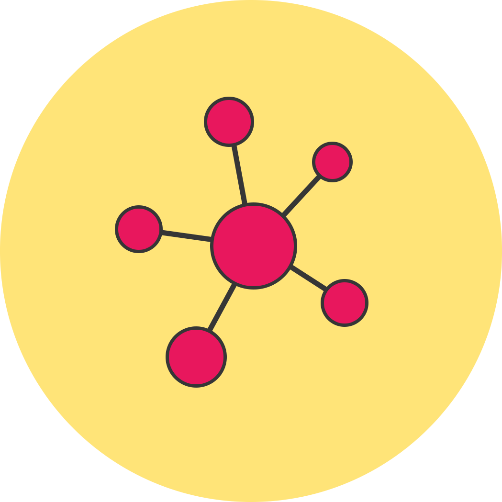
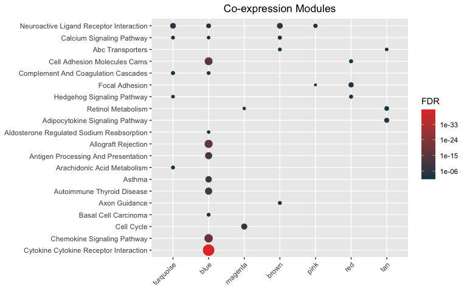

Documentation
Please visit https://montilab.github.io/hypeR-docs/
You can also try out our web-application if you prefer an interface!
Requirements
We recommend the latest version of R (>= 4.0.0) but hypeR currently requires R (>= 3.6.0) to be installed directly from Github or Bioconductor. To install with R (>= 3.5.0) see below. Use with R (< 3.5.0) is not recommended.
Installation
Install the development version of the package from Github.
Recommended
devtools::install_github("montilab/hypeR")Or install the development version of the package from Bioconductor.
BiocManager::install("montilab/hypeR", version="devel")Or install with Conda.
conda create --name hyper
source activate hyper
conda install -c r r-devtools
R
library(devtools)
devtools::install_github("montilab/hypeR")Or install with previous versions of R.
Usage
#> List of 21
#> $ turquoise : chr [1:1902] "CLEC3A" "KCNJ3" "SCGB2A2" "SERPINA6" ...
#> $ blue : chr [1:1525] "GSTM1" "BMPR1B" "BMPR1B-DT" "PYDC1" ...
#> $ magenta : chr [1:319] "DSCAM-AS1" "VSTM2A" "UGT2B11" "CYP4Z1" ...
#> $ brown : chr [1:1944] "SLC25A24P1" "CPB1" "GRIA2" "CST9" ...
#> $ pink : chr [1:578] "MUC6" "GLRA3" "OPRPN" "ARHGAP36" ...
#> $ red : chr [1:681] "KCNC2" "SLC5A8" "HNRNPA1P57" "CBLN2" ...
#> $ darkred : chr [1:43] "OR4K12P" "GRAMD4P7" "FAR2P3" "CXADRP3" ...
#> $ tan : chr [1:161] "LEP" "SIK1" "TRARG1" "CIDEC" ...
#> $ lightcyan : chr [1:82] "CDC20B" "FOXJ1" "CDHR4" "MCIDAS" ...
#> $ purple : chr [1:308] "C10orf82" "GUSBP3" "IGLV10-54" "IGKV1D-13" ...
#> $ lightyellow : chr [1:48] "SLC6A4" "ERICH3" "GP2" "TRIM72" ...
#> $ cyan : chr [1:143] "NOP56P1" "FABP6" "GNAQP1" "ZNF725P" ...
#> $ royalblue : chr [1:47] "PCDHA12" "PCDHA11" "PCDHA4" "PCDHA1" ...
#> $ black : chr [1:864] "NSFP1" "USP32P2" "OCLNP1" "RN7SL314P" ...
#> $ yellow : chr [1:904] "NPIPB15" "MAFA-AS1" "C1orf167" "NT5CP2" ...
#> $ lightgreen : chr [1:60] "HIST1H2APS3" "HIST1H2AI" "HIST1H1PS1" "HIST1H3H" ...
#> $ darkgrey : chr [1:34] "MTND4P12" "MTRNR2L1" "MT-TT" "MTCYBP18" ...
#> $ darkgreen : chr [1:43] "STK19B" "SNCG" "ELANE" "TNXA" ...
#> $ midnightblue: chr [1:92] "LRRC26" "ARHGDIG" "TGFBR3L" "HS6ST1P1" ...
#> $ grey60 : chr [1:71] "KRT8P48" "KRT8P42" "KRT8P11" "CRIP1P4" ...
#> $ salmon : chr [1:151] "UBA52P3" "NPM1P33" "MYL6P5" "RPL29P30" ...
# Access to hundreds of genesets
genesets <- msigdb_gsets("Homo sapiens", "C2", "CP:KEGG", clean=TRUE)
print(genesets)#> C2.CP:KEGG v7.4.1
#> Abc Transporters (61)
#> Acute Myeloid Leukemia (59)
#> Adherens Junction (81)
#> Adipocytokine Signaling Pathway (85)
#> Alanine Aspartate And Glutamate Metabolism (33)
#> Aldosterone Regulated Sodium Reabsorption (42)
mhyp <- hypeR(signatures, genesets, test="hypergeometric", background=30000)
hyp_dots(mhyp, merge=TRUE, fdr=0.05, title="Co-expression Modules")
Terminology
Signature
hypeR employs multiple types of enrichment analyses (e.g. hypergeometric, kstest, gsea). Depending on the type, different kinds of signatures are expected. There are three types of signatures hypeR() expects.
# Simply a character vector of symbols (hypergeometric)
signature <- c("GENE1", "GENE2", "GENE3")
# A ranked character vector of symbols (kstest)
ranked.signature <- c("GENE2", "GENE1", "GENE3")
# A ranked named numerical vector of symbols with ranking weights (gsea)
weighted.signature <- c("GENE2"=1.22, "GENE1"=0.94, "GENE3"=0.77)Geneset
A geneset is simply a list of vectors, therefore, one can use any custom geneset in their analyses, as long as it’s appropriately defined.
genesets <- list("GSET1" = c("GENE1", "GENE2", "GENE3"),
"GSET2" = c("GENE4", "GENE5", "GENE6"),
"GSET3" = c("GENE7", "GENE8", "GENE9"))Hyper enrichment
All workflows begin with performing hyper enrichment with hyper(). Often we are just interested in a single signature, as described above. In this case, hyper() will return a hyp object. This object contains relevant information to the enrichment results and is recognized by downstream methods.
hyp_obj <- hypeR(signature, genesets)Downstream methods
Please visit the documentation for detailed functionality. Below is a brief list of some methods.
Downloading genesets
BIOCARTA <- msigdb_gsets(species="Homo sapiens", category="C2", subcategory="CP:BIOCARTA")
KEGG <- msigdb_gsets(species="Homo sapiens", category="C2", subcategory="CP:KEGG")
REACTOME <- msigdb_gsets(species="Homo sapiens", category="C2", subcategory="CP:REACTOME")Saving results
# Save to excel
hyp_to_excel(hyp_obj, file_path="hypeR.xlsx")
# Save to table
hyp_to_table(hyp_obj, file_path="hypeR.txt")
# Generate markdown report
hyp_to_rmd(hyp_obj,
file_path="hypeR.rmd",
title="Hyper Enrichment (hypeR)",
subtitle="YAP, TNF, and TAZ Knockout Experiments",
author="Anthony Federico, Stefano Monti")Cite
citation("hypeR")#>
#> To cite hypeR in publications use:
#>
#> Federico, A. & Monti, S. hypeR: an R package for geneset enrichment
#> workflows. Bioinformatics 36, 1307–1308 (2020).
#>
#> A BibTeX entry for LaTeX users is
#>
#> @Article{,
#> title = {hypeR: an R package for geneset enrichment workflows},
#> author = {Anthony Federico and Stefano Monti},
#> journal = {Bioinformatics},
#> year = {2020},
#> volume = {36},
#> number = {4},
#> pages = {1307-1308},
#> url = {https://doi.org/10.1093/bioinformatics/btz700},
#> }